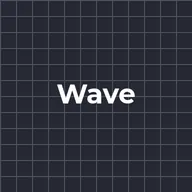
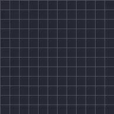

テキストトランスフォーム
範囲内の文字・単語・行を移動、拡大縮小、回転、フェード、着色します。アンカーは拡大縮小と回転の基準を各コンポーネントかレイヤー中央から選べます。オフセットで範囲を動かすと変化がテキスト内を移動します。
テキストトランスフォームは、文字・単語・行を移動、拡大縮小、回転、フェード、色付けします。影響を受ける部分に何が起こるかを設定し（位置、拡大縮小、回転、不透明度、色合い）、オフセットをアニメーションして、テキストの最初から最後まで変化が伝わるようにします。プリセットのWaveとSpin Cascadeは良い出発点です。
設定
| 設定項目 | 種類 | 範囲 | デフォルト |
|---|---|---|---|
| 基準 | 選択 | 文字、単語、行 | 文字 |
| アンカー | 選択 | コンポーネント、レイヤー | コンポーネント |
| 開始 | 数値 | 0%〜100% | 0% |
| 終了 | 数値 | 0%〜100% | 100% |
| オフセット | 数値 | -200%〜200% | 0% |
| 形状 | 選択 | 四角、ランプアップ、ランプダウン、三角、丸、スムーズ | 四角 |
| 滑らかさ | 数値 | 0%〜100% | 0% |
| 位置 | ポイント（X, Y） | -4000 px〜4000 px | 0 px, 0 px |
| スケール | 数値 | 0%〜1000% | 100% |
| 回転 | 角度 | -3600°〜3600° | 0° |
| 不透明度 | 数値 | 0%〜100% | 100% |
| 色合い | 色 | – | #FFFFFF、不透明度0% |
| ランダム順 | オン／オフ | – | オフ |
| シード | 数値 | 0〜1000 | 1 |
プリセット
エフェクトライブラリのエフェクト詳細ページから選べます。どれもすぐに使える設定で、そのまま編集できます。

ウェーブ
スピンカスケード